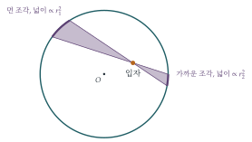
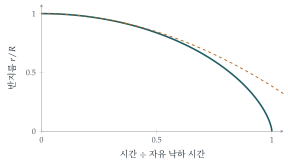

STEP III 1999, 문제 9
계속 읽기 전에 문제를 먼저 읽어 보자. 문제는 STEP Support Programme의 문제 데이터베이스에 있다: step.maths.org/questions/99-s3-q9
도입
속이 빈 행성을 상상해 보자. 안에는 아무것도 없고 얇은 구 모양의 암석 껍질만 있는 행성이다. 그 안쪽, 벽 가까이에 서 있다면 가까운 암석 쪽으로 끌려갈 것이라고 예상할지도 모른다. 그러나 실제로는 둥둥 떠 있게 된다. 껍질 내부의 모든 곳에서 껍질이 작용하는 중력(gravitational pull)은 정확히 0이기 때문이다. 껍질의 가까운 쪽은 더 가깝지만 먼 쪽은 더 크고, 이 두 효과가 완벽하게 상쇄된다.
이것이 뉴턴(Newton)의 껍질 정리(shell theorem)이다. 뉴턴은 이 정리를 증명하는 데 여러 해가 걸렸고, 이 정리는 그의 중력 이론에 꼭 필요했다. 짝을 이루는 정리(구의 바깥에서는 모든 질량이 중심에 모여 있는 것처럼 끌어당긴다)와 함께, 이 정리는 지구와 태양을 점으로 취급하는 것을 정당화한다. 연습 문제와 숨은 수학 절에서는 이 정리를 이용하여 기체 구름이 붕괴하여 별이 되는 데 걸리는 시간을 계산한다.
시작하기 전에
고리에서 지름의 양 끝에 서로 마주 보는 작은 두 조각을 생각하자. 이 두 조각이 입자에 작용하는 힘을 그려 보자. 어떤 성분은 상쇄되고, 어떤 성분은 더해지는가?
두 조각은 입자로부터 같은 거리에 있다. 두 조각이 끌어당기는 힘의 축 방향 성분은 크기가 같아서 더해지고, 축에 수직인 성분은 크기가 같고 방향이 반대여서 상쇄된다. 고리 전체를 이런 식으로 짝지으면 알짜힘은 축 방향, 즉 고리의 중심을 향한다.
차근차근 풀기
단계 1 고리
고리의 모든 조각은 입자로부터 거리 \(\sqrt{x^2 + r^2}\)에 있고, 입자에서 조각으로 그은 직선은 축과 각 \(\psi\)를 이룬다. 여기서 \(\cos\psi = \frac{x}{\sqrt{x^2 + r^2}}\)이다. 질량 \(\delta m\)인 조각은 크기 \(\frac{G\,\delta m}{x^2 + r^2}\)의 힘으로 끌어당기며, 그중 축 방향 성분은 \(\frac{G\,\delta m}{x^2 + r^2}\cdot\frac{x}{\sqrt{x^2 + r^2}}\)이다. 모든 조각의 거리와 각이 같으므로 이 성분들을 그냥 더하면 \[\frac{Gmx}{(x^2 + r^2)^{3/2}}. \qed\]
단계 2 껍질을 고리로 자르기
껍질의 중심을 \(O\)에 두고, 입자를 축 위의 \(O\)로부터 거리 \(b\)인 곳에 두자. 껍질을 축에 수직인 얇은 고리들로 자르고, 각 고리를 그 고리 위의 한 점이 \(O\)에서 축과 이루는 각 \(\phi\)로 나타내자. 고리의 반지름, 위치, 질량은 각각 무엇인가?
각 \(\phi\)에 있는 고리의 반지름은 \(a\sin\phi\)이고, 그 중심은 축을 따라 \(O\)로부터 거리 \(a\cos\phi\)에 있으므로 입자로부터는 거리 \(a\cos\phi - b\)에 있다. 고리의 폭은 \(a\,\delta\phi\)이므로 넓이는 \(2\pi a\sin\phi \cdot a\,\delta\phi\)이고, 이는 껍질의 넓이 \(4\pi a^2\)의 \(\frac12\sin\phi\,\delta\phi\)배이다. 따라서 고리의 질량은 \(\frac12M\sin\phi\,\delta\phi\)이다. 1단계에 의해 이 고리는 입자를 축을 따라 \(\phi = 0\) 쪽 끝으로 다음 크기의 힘으로 끌어당긴다. \[\frac{G\cdot\frac12M\sin\phi\,\delta\phi\,(a\cos\phi - b)}{\bigl((a\cos\phi - b)^2 + a^2\sin^2\phi\bigr)^{3/2}} = \frac{GM}{2}\cdot\frac{(a\cos\phi - b)\sin\phi\,\delta\phi}{(a^2 - 2ab\cos\phi + b^2)^{3/2}}.\] (부호는 저절로 처리된다. \(a\cos\phi > b\)인, 입자 너머의 고리들은 한쪽으로 끌어당기고, 입자 뒤쪽의 고리들은 반대쪽으로 끌어당긴다.)
단계 3 알맞은 변수
분모에는 \(s^2 = a^2 - 2ab\cos\phi + b^2\)이 들어 있다. \(s\)는 기하학적으로 무엇을 나타내는가? \(\mathrm{d}s\)를 \(\mathrm{d}\phi\)로 나타내면 무엇인가?
코사인 법칙(cosine rule)에 의해 \(s\)는 입자에서 고리까지의 거리이다. 미분하면 \(2s\,\mathrm{d}s = 2ab\sin\phi\,\mathrm{d}\phi\)이고, \(s^2 = a^2 - 2ab\cos\phi + b^2\)을 \(a\cos\phi\)에 대하여 풀면 \(a\cos\phi - b = \frac{a^2 - b^2 - s^2}{2b}\)이다. 따라서 전체 힘은 \[\frac{GM}{2}\int \frac{a^2 - b^2 - s^2}{2b\,s^3}\cdot\frac{s\,\mathrm{d}s}{ab} = \frac{GM}{4ab^2}\int_{a - b}^{a + b}\Bigl(\frac{a^2 - b^2}{s^2} - 1\Bigr)\mathrm{d}s,\] 이다. 여기서 \(s\)는 \(a - b\)(가장 가까운 점, \(\phi = 0\))부터 \(a + b\)(가장 먼 점, \(\phi = \pi\))까지 변한다.
단계 4 힘이 사라진다
\[\int_{a-b}^{a+b}\Bigl(\frac{a^2 - b^2}{s^2} - 1\Bigr)\mathrm{d}s = (a^2 - b^2)\Bigl(\frac{1}{a - b} - \frac{1}{a + b}\Bigr) - 2b = (a^2 - b^2)\cdot\frac{2b}{a^2 - b^2} - 2b = 0.\] 껍질은 입자에 아무런 힘도 작용하지 않는다.■
입자가 껍질의 바깥, 즉 \(b > a\)인 곳에 있으면 무엇이 달라지는가? \(s\)의 범위의 끝값이 \(b - a\)와 \(b + a\)가 된다. 마지막 줄을 다시 계산하여, 힘이 중심을 향하고 크기가 \(\frac{GM}{b^2}\)임을, 즉 모든 질량이 중심에 모여 있는 것과 같음을 보여라.
돌아보기
대칭성을 먼저 보라. 마주 보는 조각을 짝지어 보는 것만으로, 계산하기 전에 힘의 방향을 알 수 있었다.
더 간단한 도형에서부터 쌓아 올려라. 점들이 모여 고리가 되고, 고리들이 모여 껍질이 되었다.
물리적 상황에 맞는 변수를 골라라. 각 \(\phi\)에서 거리 \(s\)로 변수를 바꾸자 까다로운 적분이 아주 쉬운 적분이 되었다.
숨은 수학
뉴턴의 원뿔 논증
뉴턴 자신의 증명(프린키피아, 제1권, 명제 70)에는 적분이 전혀 쓰이지 않는다. 입자를 꼭짓점으로 하는 좁은 이중 원뿔을 그리면, 이 원뿔은 껍질을 작은 두 조각으로 잘라 낸다(그림 10.7.1). 두 조각의 넓이는 입자로부터의 거리의 제곱 \(r_1^2\)과 \(r_2^2\)에 비례한다(현은 양 끝에서 원과 같은 각으로 만나므로, 두 조각은 원뿔과 같은 각을 이룬다). 따라서 두 조각의 질량은 \(r_1^2\)과 \(r_2^2\)에 비례하고, 질량을 거리의 제곱으로 나눈 값에 비례하는 두 조각의 인력은 크기가 같고 방향이 반대이다. 입자를 지나는 모든 이중 원뿔에서 힘이 상쇄되므로 전체 힘은 0이다. 바로 역제곱 법칙(inverse-square law) 덕분에 이러한 상쇄가 일어난다. 거리의 다른 거듭제곱을 따른다면 껍질은 입자를 밀거나 끌어당길 것이다.

붕괴하는 구름
STEP III 1987 Q14는 이 정리를 반대 방향으로 이용한다. 균일한 구의 바깥에서, 표면에 있는 입자에 작용하는 인력은 전체 질량이 중심에 있는 것처럼 \(GMm/r^2\)이다. 이제 정지해 있는 반지름 \(R\), 질량 \(M\)인 균일한 구 모양의 먼지 구름을 생각하고, 이 구름이 자체 중력으로 붕괴하게 하자. 표면의 입자는 자신보다 안쪽에 있는 질량만 느끼는데, 모든 것이 안쪽으로 떨어지므로 이 질량은 계속 \(M\)이다. 따라서 안쪽으로 향하는 속력 \(v = -\dot r\)는 다음을 만족한다. \[v\frac{\mathrm{d}v}{\mathrm{d}r} = -\frac{GM}{r^2}, \qquad\text{따라서}\qquad v^2 = 2GM\Bigl(\frac1r - \frac1R\Bigr).\] \(r = R\cos^2\alpha\)로 치환하면(연습 문제 중 하나이다) 반지름 \(r\)에 이르기까지 걸리는 시간은 \(\sqrt{\frac{R^3}{2GM}}\bigl(\alpha + \frac12\sin 2\alpha\bigr)\)이다. 구름 전체는 \(\alpha = \frac\pi2\)일 때 한 점으로 붕괴하며, 이는 다음 자유 낙하 시간(free-fall time)이 지난 뒤이다. \[t_{\text{ff}} = \frac{\pi}{2}\sqrt{\frac{R^3}{2GM}} = \sqrt{\frac{3\pi}{32G\rho}},\] 여기서 \(\rho\)는 밀도이다. 놀랍게도 이 시간은 밀도에만 의존하므로, 구름의 모든 껍질이 같은 순간에 중심에 도달한다(그림 10.7.2). 세제곱미터당 약 \(10^{-17}\) kg인 전형적인 성간 구름의 경우 \(t_{\text{ff}}\)는 약 \(700\,000\)년이며, 이것이 별이 형성되는 시간 규모를 정한다.

뉴턴은 1660년대에 이미 역제곱 법칙을 알고 있었지만, 중력 이론은 1687년에야 발표했다. 일부 역사가들에 따르면 그 이유 중 하나는, 껍질 정리를 증명하기 전까지는 지구를 질점으로 취급하는 것을 정당화할 수 없었기 때문이다. 일단 증명하고 나자 프린키피아의 나머지 내용이 뒤따랐다. 오늘날 이 정리는 가우스(Gauss) 법칙(Gauss’s law)의 간단한 결과이다. 가우스 법칙은 임의의 닫힌곡면을 통해 바깥으로 흘러 나가는 중력장의 총량이 그 안의 질량에 비례한다는 법칙이다. 껍질 내부에 중심이 같은 구를 하나 잡자. 이 구는 질량을 하나도 둘러싸지 않으므로, 이 구를 통과하는 총 흐름은 0이다. 이것만으로 장이 0이 되지는 않지만(균일한 장은 한쪽으로 흘러 들어와 다른 쪽으로 흘러 나가므로, 어떤 닫힌곡면을 통과하는 총 흐름도 0이다), 여기서는 대칭성이 도움이 된다. 장은 중심을 곧장 향하거나 중심에서 곧장 멀어지는 방향이어야 하고, 구 위의 모든 곳에서 세기가 같아야 하므로, 총 흐름이 0이라는 것은 장이 0이라는 뜻이다. 같은 법칙이 전기장도 지배한다. 그래서 대전된 금속 껍질 내부에는 전기장이 없고, 자동차가 번개로부터 우리를 보호해 준다.
사고 기술
연속적인 물체의 효과를 구하려면, 그 물체를 효과를 이미 아는 조각들로 자르고 그것들을 모두 더하라. 조각을 고를 때는 대칭성을 이용하라.
점들이 모여 고리가 되고, 고리들이 모여 껍질이 되며, 껍질들이 모여 속이 찬 구가 된다. 대학에서는 모든 장(중력장, 전기장, 자기장)을 이런 방식으로 그 원천으로부터 계산하며, 이는 가우스 정리와 스토크스(Stokes) 정리의 벡터 미적분학으로 이어진다.
더 도전하기
껍질의 바깥. 잠깐 생각하기 상자의 내용을 완성하라. 즉, 껍질의 바깥에서 힘이 \(\frac{GM}{b^2}\)임을 보여라. 이로부터 질량 \(M\)인 속이 찬 균일한 구가 바깥의 입자를, 질량이 모두 중심에 있는 것처럼 끌어당김을 이끌어 내라.
붕괴 시간. STEP III 1987, 문제 14에 도전해 보라. 먼지 구름이 자체 중력으로 붕괴하는 데 걸리는 시간을 구하는 문제이며, 삼각치환으로 적분을 계산할 수 있다.
지구를 관통하는 터널. 속이 찬 균일한 구의 내부에서, 중심으로부터 거리 \(b\)인 곳의 힘이 \(b\)에 비례하는 \(\frac{GMb}{a^3}\)임을 보여라. 이로부터 지구 중심을 지나는 터널에 떨어뜨린 공이 주기 \(2\pi\sqrt{a^3/(GM)}\), 약 \(84\)분으로 진동함을 이끌어 내라. 이는 지표면을 스치듯 도는 인공위성의 주기와 같다.
다른 힘의 법칙. 중력이 역세제곱 법칙을 따른다면, 껍질 내부의 힘은 여전히 0일까? (\(\frac{1}{s^2}\) 대신 \(\frac{1}{s^3}\)을 넣어 3단계를 다시 해 보라.)
더 읽을거리
Daniel Kleppner & Robert Kolenkow, An Introduction to Mechanics (Cambridge University Press). 껍질 정리를 포함한 중력에 관한 장들.
찬드라세카르(Subrahmanyan Chandrasekhar), Newton’s Principia for the Common Reader (Oxford University Press). 명제 70과 71을 포함한 뉴턴의 증명들을 노벨상 수상자가 해설한 책.
Andrew Pontzen, The Universe in a Box (Riverhead). 중력, 붕괴, 시뮬레이션이 우주의 구조를 어떻게 설명하는지 다룬 책.